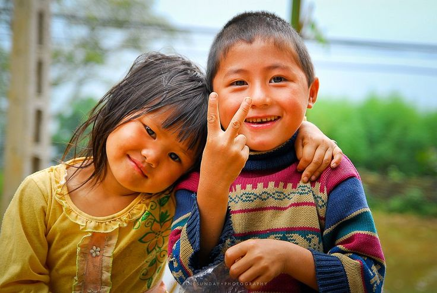
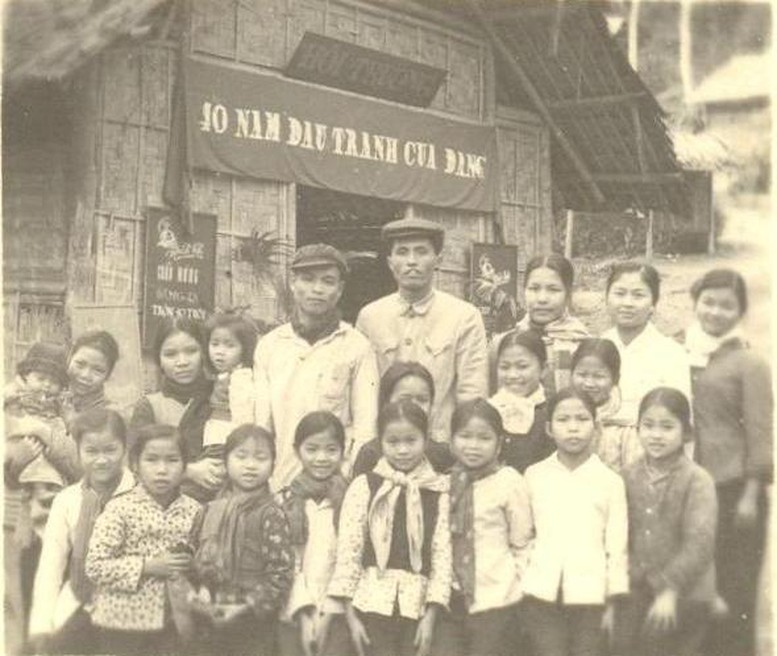
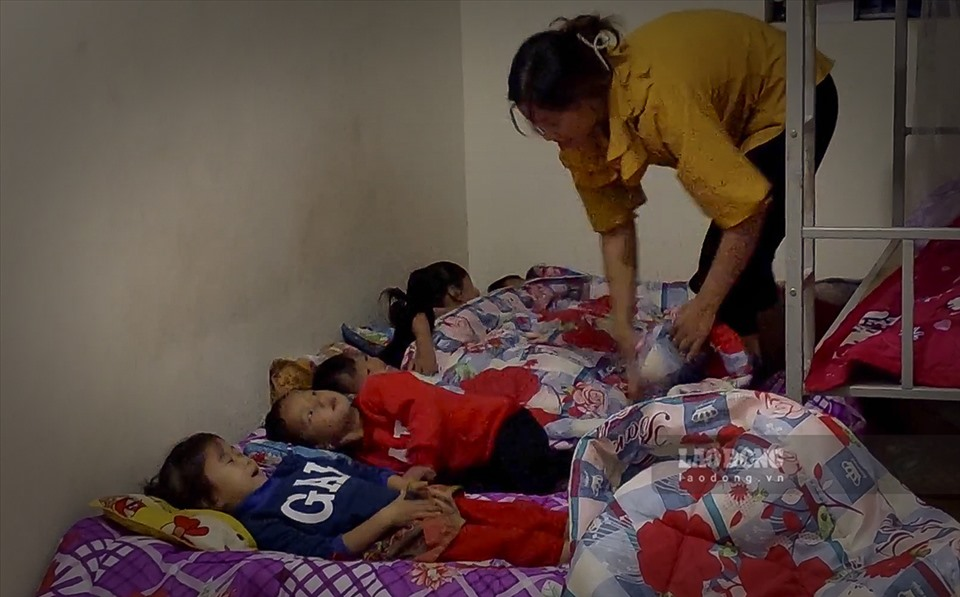

|
Tri ân những mặt trời rọi sáng phương xa. Nơi xa xôi, hiểm nguy, lắm nguy nan, ngàn gian khổ, núi đồi trùng điệp ngăn cách vẫn đang có những ánh mắt trẻ thơ ngóng trông dưới khát vọng mỏi mòn kiếm tìm con chữ. |
 Nguồn: Pinterest |
|
 Nguồn: Báo Điện tử Chính phủ |
Ngược dòng thời gian, hơn 60 năm trước, đi theo tiếng gọi của Trung ương
Đảng và
Bác Hồ, mùa thu năm 1959, có 860 giáo viên miền xuôi đã xung phong mang ánh sáng văn hóa đến với
các thôn, bản xa xôi nơi vùng cao Tây Bắc - Việt Bắc. |
|
Đến nay, tinh thần ấy vẫn được giữ lửa với những tấm gương nhà giáo đang
âm thầm
cống hiến. Như cô giáo Hà Thị Huệ - giáo viên Trường Mầm non Nà Hỳ, xã Nà Hỳ, huyện Nậm Pồ -
chia sẻ: “Vào mùa mưa, khi đi vận động học sinh ra lớp, nhiều gia đình đi ở nương nên rất khó để
gặp. Không gặp được phụ huynh, chúng tôi lại phải đi vào ban đêm, chờ đến tối mới gặp được để
vận động phụ huynh đưa con đến lớp”. |
 Nguồn: Báo Lao Động |
Nếu ta quý mến ánh mắt non thơ kia một thì có lẽ nhiều phần hơn nữa chúng ta càng phải thêm ngưỡng mộ các thầy cô biên chế tại các điểm trường vùng cao này. Họ hoặc phải xa gia đình, hoặc phải gác lại cuộc sống thành thị đủ đầy để ngày nay có mặt góp sức cho công cuộc giáo dục chung của dân tộc - Không ai bị bỏ lại phía sau, không ước mơ nào bị vụt tắt.
Nguồn: VTV24
Biết rằng nghiệp sư phạm chẳng dễ dàng, nay càng thêm lắm gian truân, thác ghềnh khi những người thầy người cô ấy phải đối mặt với thiên nhiên muôn vàn mối ngại. Vì thế càng thêm trân trọng và biết ơn những hi sinh vượt đèo, lội suối của những "tiều phu vác chữ" mở đường ươm mầm, thắp lửa chốn xa xôi, lắm gian truân này.
Bao nhiêu biết ơn cũng sẽ là không đủ và không bao giờ đủ với những công ơn kia. Vì thế cá nhân và tập thể chúng tôi mong mọi người sẽ dành một chút tình cảm ủng hộ, giúp đỡ cho sự nghiệp trồng người thiêng liêng trên.
|
Minh Thư |
Minh Hảo |
Gia Hân |
Tấn Phát |